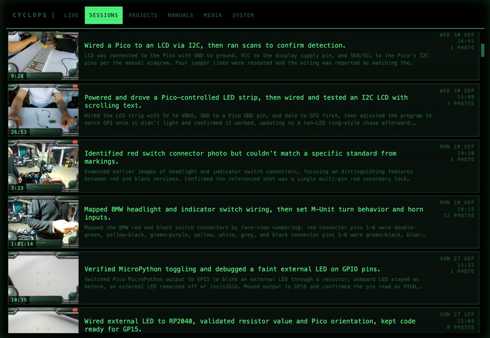
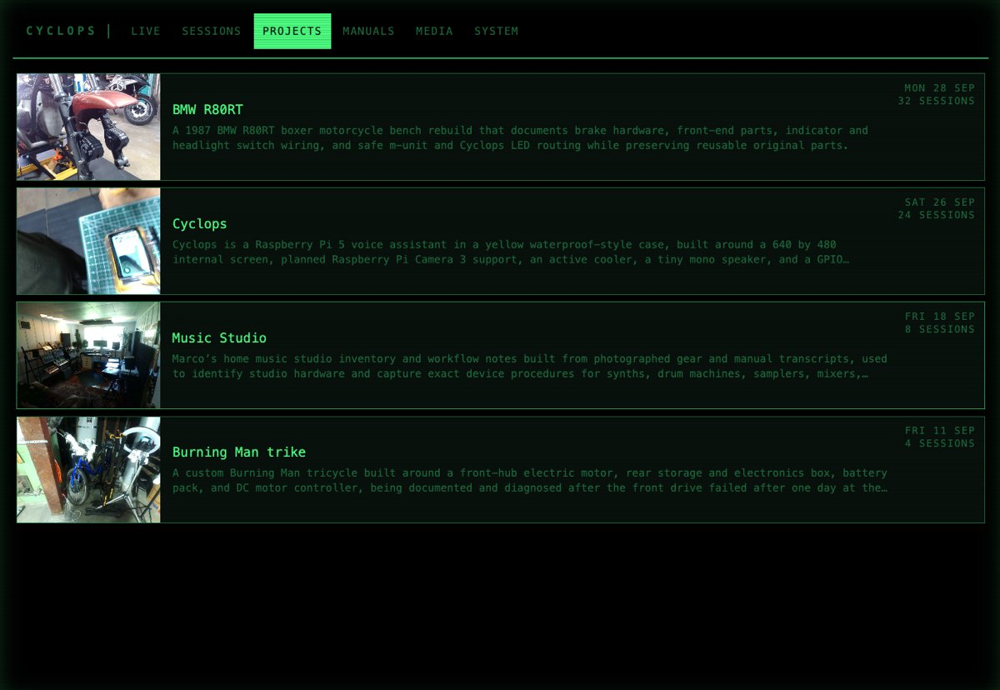
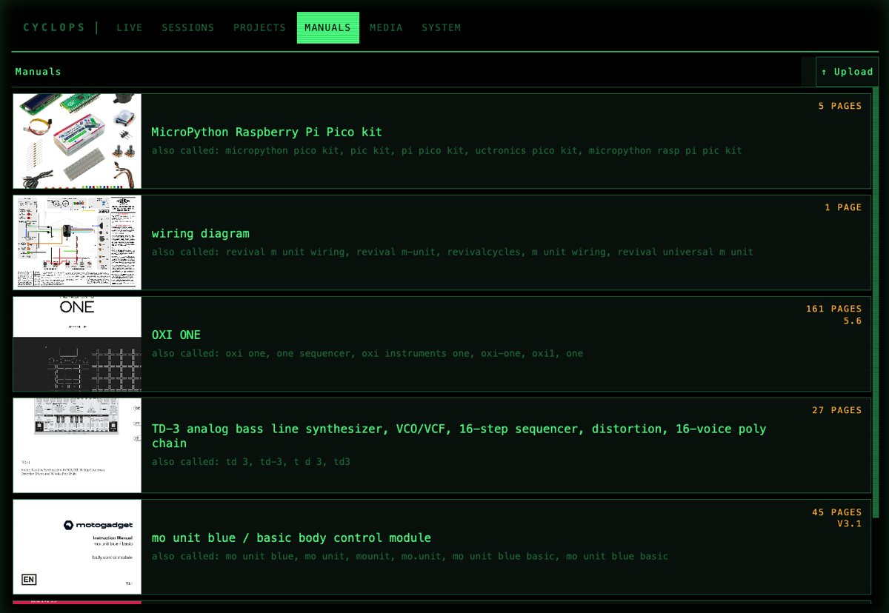
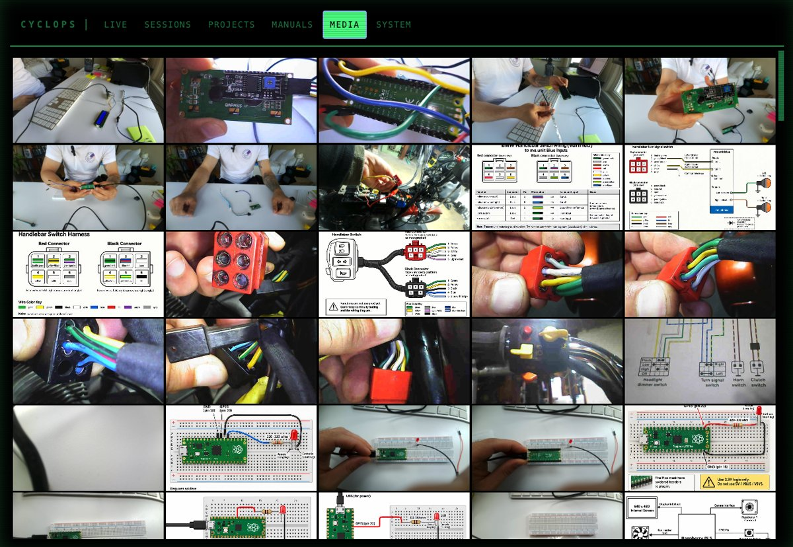

What you see when you turn Cyclops on: the camera's view of your bench, framed by its panel.
What I've used it for
Rebuilding motorcycle brakesFitting the front calipers on a 1987 BMW R80RT, with the workshop manual read out step by step.Seeing where I can'tA dragging brake, inspected through a probe camera plugged into Cyclops. It found the pin to pull.Wiring a handlebar switchI held up the connectors, it worked out the pins and drew the wiring diagram on its screen.Programming a synthWriting a bassline on an OXI One for a TD-3, with Cyclops reading the manual for me.Electronics on the deskAn LED strip and an LCD on a Raspberry Pi Pico. Cyclops wrote and ran the code itself.…and reloading a staplerNot every job is a big one.
How it's built
A sturdy-AF Pelican case.Raspberry Pi 5 + camera module.A USB port, for connectivity.A tiny speaker.A 7" touchscreen.
It lives on your Wi-Fi
Open cyclops.local on your phone, laptop or iPad. No app, no account: every session, project, manual and photo is right there.

SessionsEvery conversation, summarised, with its video and photos.

ProjectsSessions get filed into projects, so next week picks up where you left off.

ManualsUpload a PDF once and Cyclops has read it.

MediaEvery photo it took and every diagram it drew.
Get involved
Cyclops is open source and very much a work in progress. Build your own, try it out, or just say hi. I'd love to hear what you'd use it for.